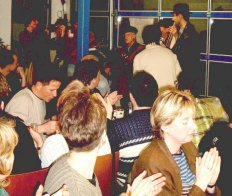
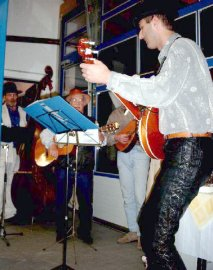
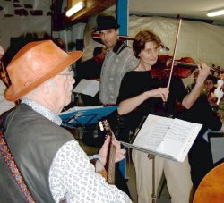
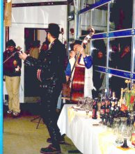
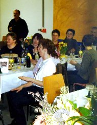
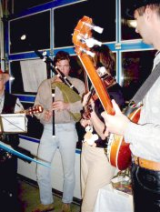
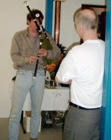
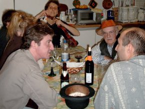
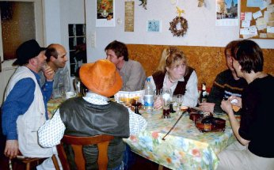
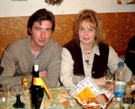

Silberhochzeit bei Karchers
| Willi und Renate Karcher sind nun schon seit 25 Jahren verheiratet. Renate wollte ihren Mann überraschen und engagierte einfach die Ofenrohre. Die Beiden kannten uns schon: wir hatten mal unsere Probe in einer lauen Sommernacht aus Jan’s damals stickiger Bude an den Kiosk am Rhein verlegt. Schon damals war Willi ganz begeistert von unserer Musik. Jetzt bot sich die Gelegenheit, einem größeren Publikum unsere Musik näher zu bringen. Und denen gefiel’s!! | ||
|---|---|---|
|
 Die Ofenrohre waren das Überraschungsgeschenk von Renate an ihren Willi. Die Gäste ließen sich auch gleich zu Begeisterungsstürmen hinreißen. |
 Die Ofenrohre legten sich bei solchem Zuspruch auch ganz besonders ins Zeug: Bernhard, Uli, Jan, Markus … |
 … und nicht zu vergessen: Monika. Sie war hier ausgesprochen bekannt: viele ihrer Patienten saßen unter den Zuhörern. Das schien sie ungeheuer anzuspornen. Sie spielte wie der Teufel! |
|
 Allen ging es ausgesprochen gut, wie man hier an den vollen Tischen sieht. |
 Alle sangen und klatschten mit und waren begeistert, so wie hier im Vordergrund Renate. |
 Im Laufe des Abends zog Jan auch seinen Dudelsack hervor … |
|
 … und brachte dem Hausherrn ein spezielles Ständerle. |
 Die Küche wurde zur „Backstage“ der Ofenrohre umfunktioniert, wo das Programm vorbesprochen und Instrumente repariert wurden. |
 Wie man sieht, wurden die Diskussionen immer heftiger … |
|
 … aber das hatte keinen Einfluss auf das gute Klima, z. B. zwischen Jan und Angelika. |
Sollte noch jemand Bilder von dieser gelungenen Veranstaltung hier veröffentlichen wollen, bin ich gerne dazu bereit.
Hier gibt’s übrigens noch mehr Bilder von den Ofenrohren in Weisweil, allerdings vom Anglerfest 2001. |
|
){kind=link}
){kind=link}
){kind=link}
){kind=link}
){kind=link}
){kind=link}
){kind=link}
){kind=link}
){kind=link}
){kind=link}